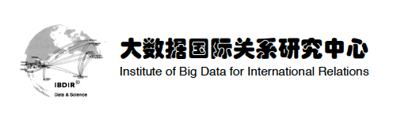

收录于合集
首届UIBE“大数据政治学与国际关系”论坛：数据如何变革政治由对外经济贸易大学国际关系学院主办，对外经济贸易大学大数据国际关系研究中心承办。
时间：2018年6月2日
地点：对外经济贸易大学科研楼五层校董会议室
会议日程：
开幕式时间 ：2018年6月2日上午9：00—9：30
主持人 ： 戴长征 对外经济贸易大学国际关系学院教授、院长
致辞： 蒋庆哲 对外经济贸易大学校党委书记、教授
吕 欣 国家信息中心办公室副主任、研究员
合影留念

议题一：数据时代的社会变革、权力重构与政治学研究
发言时间：9：30—10：30（每位专家发言时间为10分钟）
主持人： 陈志瑞 外交学院《外交评论》
发言人：
陆 钢 ：大数据治理与公民隐私权保护
华东师范大学国际问题研究所
李 齐 ：数据时代的权力重构
山东师范大学公共管理学院
赵 娟 ：网络驱动的回应性政府：网络问政的制度扩散及运行模式
清华大学政治学系
李 锋 ：公民诉求表达与政府回应——基于全国网络问政平台的大数据分析
中共中央党校
赵 晨 ：新时代网络安全治理的几点思考
中国现代国际关系研究院
王海滨 ：数字时代的政治风险与大数据国家安全战略
对外经济贸易大学国际关系学院
自由讨论：10：30—10：45
茶歇：10：45—11：00

议题二：智慧外交与数据驱动的国际关系理论构建
发言时间：11：00—12：00（每位专家发言时间为10分钟）
主持人 ： 谭秀英 国际关系学院《国际安全研究》
发言人：
王存刚 ：大数据与外交学研究：若干理论问题的思考
同济大学政治与国际关系学院
漆海霞 ：应用大数据分析国际关系
清华大学国际关系学系
孙学峰 ：大数据时代的国际关系理论创新
清华大学国际关系研究院
熊李力 ：大数据时代的国家理性
对外经济贸易大学国际关系学院
刘 丰 ：国际关系中的大数据冲击：意义与局限
南开大学周恩来政府管理学院
自由讨论：12：00—12：15
午餐：12：15—13：30

议题三：跨学科交叉研究：新视角、新模型与新方法
发言时间：13：30—14：30（每位专家发言时间为10分钟）
主持人： 张萍 中国社会科学杂志社
发言人：
封 帅 ：走向数据与算法的对抗：人工智能时代的国家战略行为
上海国际问题研究院国际战略研究所
陈雪飞 跨学科视域下的微博外交分析
外交学院外交学与外事管理系
池志培 GDELT与双边关系预测
中央财经大学国防经济与管理研究院
董柞壮 联盟与军事冲突的社会网络分析
南开大学周恩来政府管理学院
徐 静 上海全球城市国际形象传播的效果研究
上海工程技术大学社会科学学院
董青岭 基于神经网络和社会情绪的恐怖袭击预测分析
对外经济贸易大学国际关系学院
自由讨论：14：30—14：45
茶歇：14：45—15：00
议题四：政治科学研究中的技术应用与数据伦理
发言时间：15：00—16：00（每位专家发言时间为10分钟）
主持人 ： 肖静秋 《中国投资》
发言人 ：
石海明 ： 后人类战争：人工智能、生物交叉技术重塑未来军事图景
国防科技大学国防科技与社会发展研究中心
徐龙第 ： 人工智能时代的战争伦理
中国国际问题研究院
宋 伟 ： 大数据方法对于国际问题研究的意义与局限
中国人民大学国际关系学院
张海洋 ：数据时代的政治学与国际关系：若干议程的思考
中国社会科学院《欧洲研究》编辑部
檀有志 ：大数据时代中国特色大国外交能力建设思考
对外经济贸易大学国际关系学院
自由讨论：16：00—16：15

闭幕总结：16：15—16：30

对外经济贸易大学国际关系学院大数据国际关系研究中心（IBDIR）创立于2016年1月，是国内最早设立的以大数据和机器学习为视角探索国际关系和政治运行的研究中心。目前中心主要致力于政治学与国际关系研究领域内开源数据的清洗、搜索、挖掘与建模，中心定期（每月/季度/年）出版各类开源数据集、可视化分析报告与热点趋势预测，以期能够为领域内科研提供坚实的数据支撑与数据分析技术援助。中心主要产品包括《国际安全态势感知指数》（《国际安全研究》杂志联合发布）、《世界主要国家国际战略关联指数》、全球新闻事件数据库，并与中国国际关系学院《国际安全研究》杂志、北京蒙特卡罗数据科技有限公司等保持战略合作。
中心主任： 戴长征 教授
执行人： 董青岭 教授
学术合作： 010-64497043
数据服务： AcaData@163.com
中心地址： 北京市朝阳区惠新东街10号对外经济贸易大学诚信楼817房间
编辑：里仝
学人约稿与入群邀请